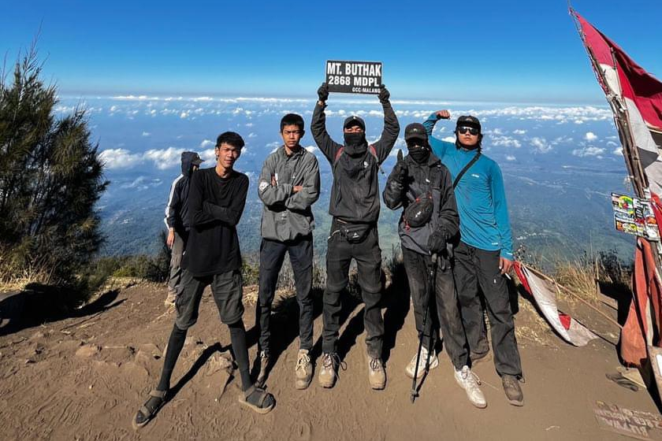
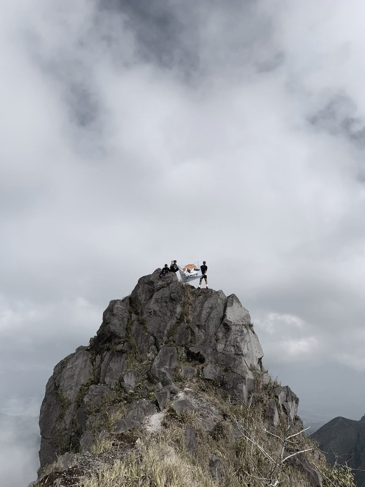
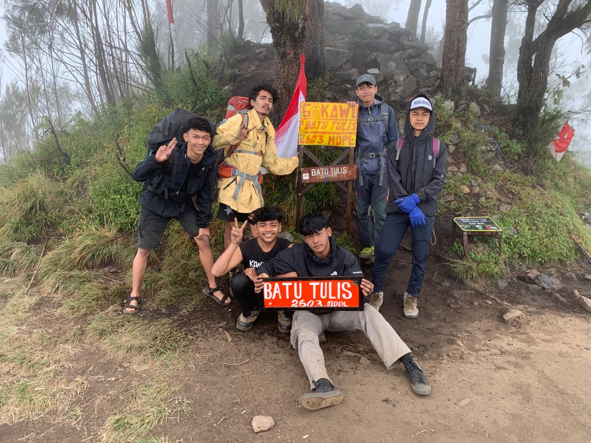
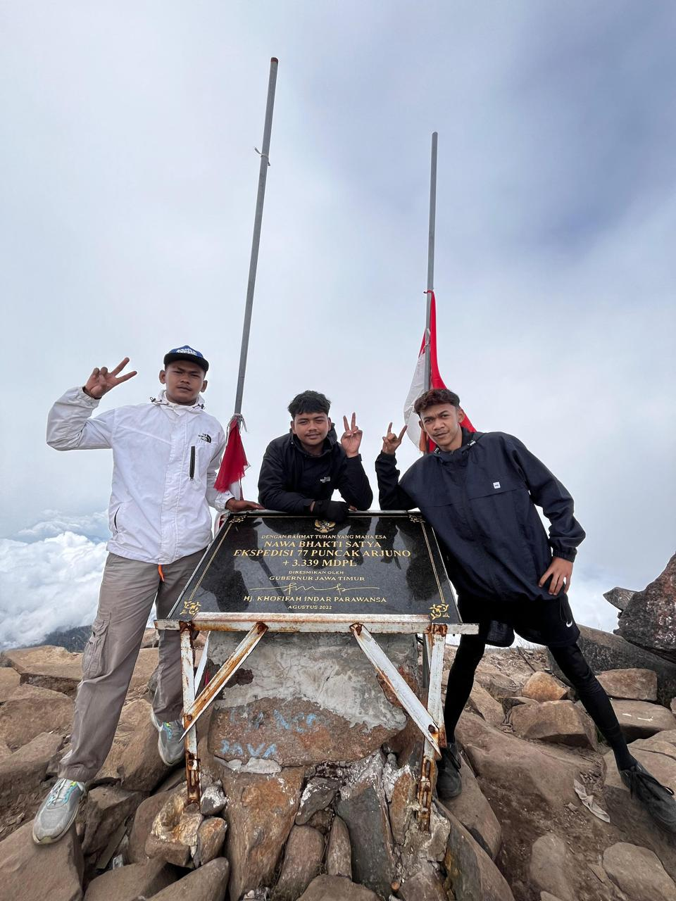
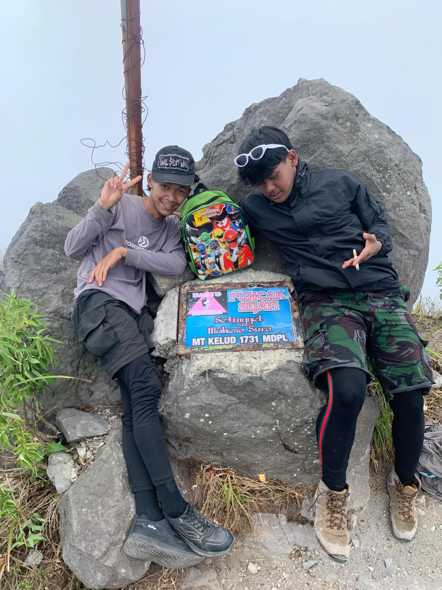

Buthak
Gunung berapi kerucut nonvulkanik setinggi 2.868 meter di atas permukaan laut (mdpl) yang terletak di perbatasan Kabupaten Malang dan Kabupaten Blitar, Jawa Timur.
Hutan dan gunung membentuk ekosistem alami yang saling terhubung dan sangat penting untuk menjaga keseimbangan lingkungan serta sumber daya air bumi.
KLIK UNTUK MELIHAT

Gunung berapi kerucut nonvulkanik setinggi 2.868 meter di atas permukaan laut (mdpl) yang terletak di perbatasan Kabupaten Malang dan Kabupaten Blitar, Jawa Timur.

Gunung berapi istirahat setinggi 2.551 meter di atas permukaan laut yang terletak di perbatasan Kabupaten Malang dan Kabupaten Blitar, Jawa Timur.

Gunung berapi kerucut tertinggi kedua di Jawa Timur dengan ketinggian 3.339 meter di atas permukaan laut.

Gunung berapi aktif di Jawa Timur yang terletak di perbatasan Kabupaten Kediri, Kabupaten Blitar, dan Kabupaten Malang.